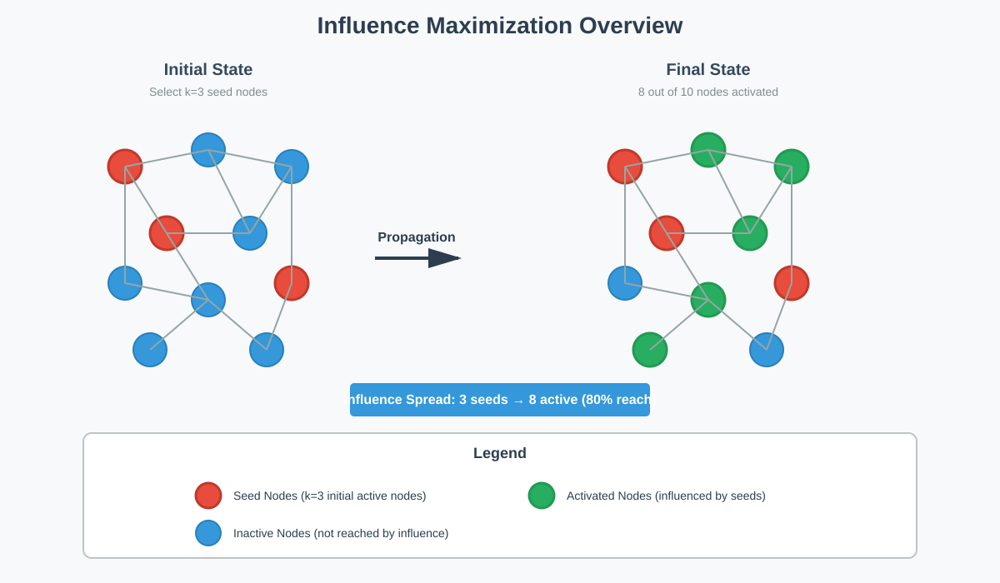
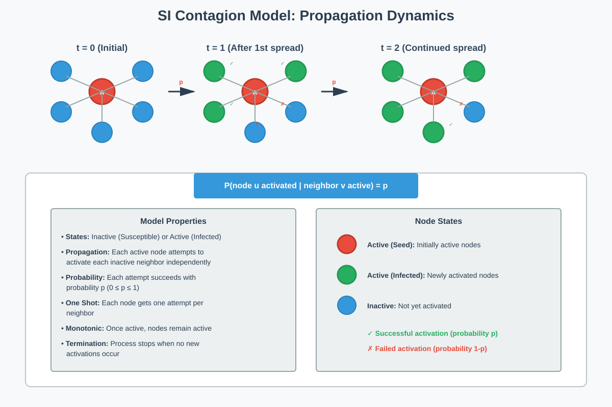
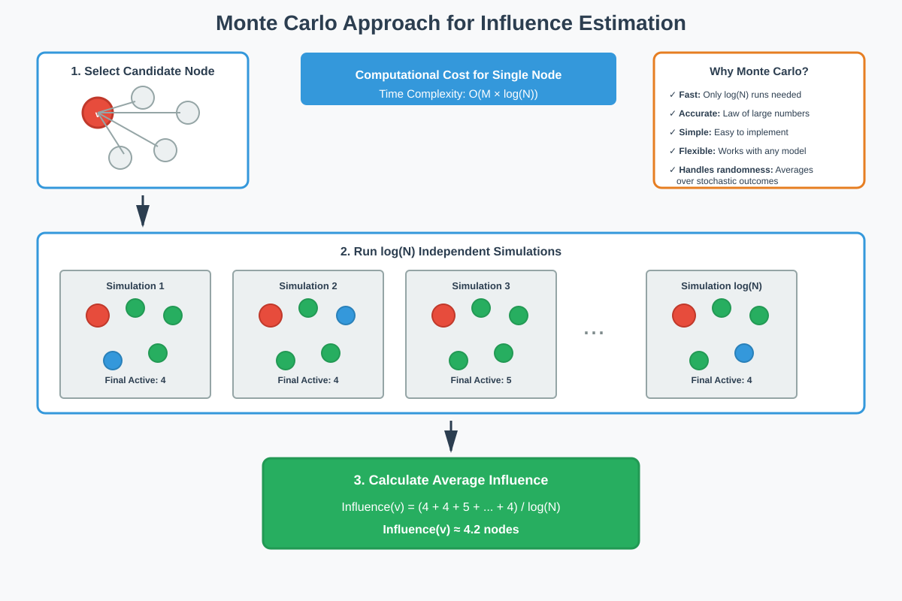
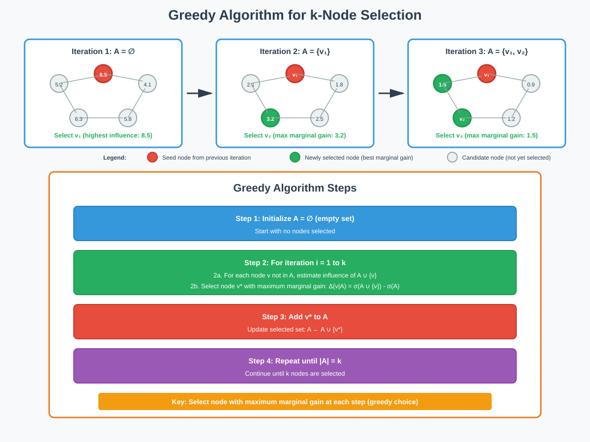
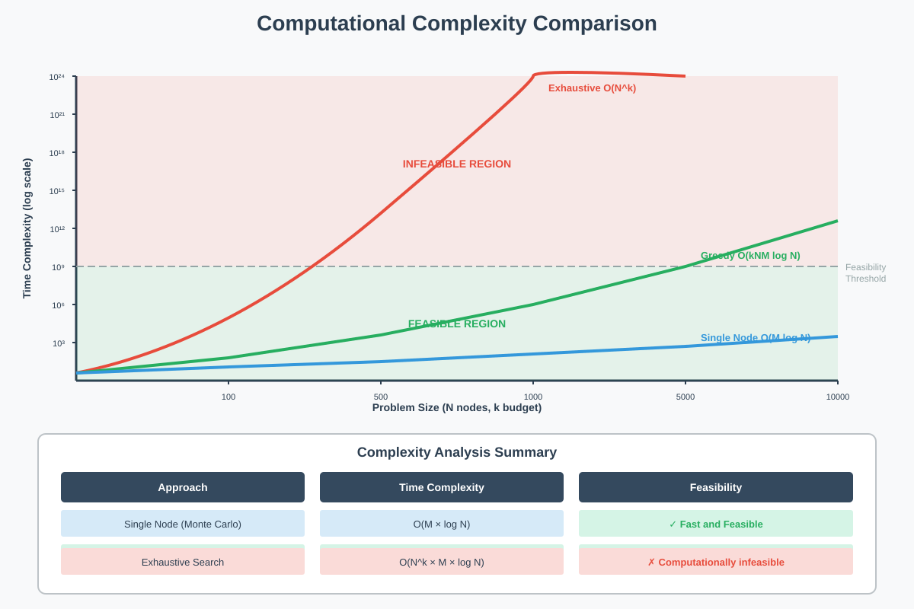

Influence Maximization in Networks
Quick Navigation
- Introduction
- Network Contagion Models
- The Influence Maximization Problem
- Monte Carlo Approach
- Greedy Algorithm for k-Node Selection
- Computational Complexity Analysis
- Performance Guarantees
- Advanced Contagion Models
- Real-World Applications
- References & Further Reading
Introduction
Influence maximization is a fundamental problem in network science that addresses the question: How do we identify the most influential individuals in a network to maximize the spread of information, products, or behaviors?
This problem has critical applications in:
- Viral Marketing: Selecting individuals to receive free products or advertisements
- Public Health: Identifying key individuals for vaccination campaigns
- Social Change: Targeting opinion leaders to influence public opinion
- Innovation Diffusion: Accelerating the adoption of new technologies

Key Insight:
The power of network effects means that targeting a small number of well-connected individuals can lead to exponentially larger reach than targeting random individuals or those with simply high visibility.
Network Contagion Models
The SI Model
The SI (Susceptible-Infected) Model provides a framework for understanding how ideas, products, or behaviors spread through networks. For influence maximization applications, we often use the terms inactive and active instead of susceptible and infected.
Model Characteristics:
- Nodes: Represent individuals in the network
- Edges: Represent relationships or connections between individuals
- States: Each node is either inactive (not adopted) or active (adopted)
- Propagation Probability: Each active node has probability p of activating each inactive neighbor

Propagation Dynamics
The contagion process works as follows:
- Initialization: Start with an initial set of active nodes A
- Spreading: Each active node attempts to activate its inactive neighbors
- Independence: Each activation attempt is independent with probability p
- Stabilization: The process continues until no new nodes can be activated
Mathematical Formulation:
P(u becomes active | neighbor v is active) = p
Where:
- u = susceptible (inactive) node
- v = infected (active) neighbor
- p = propagation probability (0 ≤ p ≤ 1)
Stochastic Nature:
For each initial set A, the infection spreads randomly through the network, eventually stabilizing with some final set of active nodes. This randomness is key to understanding why we use expected values in optimization.
The Influence Maximization Problem
Problem Definition
Given:
- A social network graph G = (V, E) with N nodes and M edges
- A contagion model (e.g., SI model) with propagation probability p
- A budget k representing the number of individuals we can initially target
Objective:
Find the subset A ⊆ V of size k that maximizes the expected number of active nodes when the contagion process stabilizes.
Formal Definition:
A* = argmax E[σ(A)]
|A|=k
Where:
- A* = optimal set of k nodes
- σ(A) = number of active nodes when starting from set A
- E[σ(A)] = expected number of active nodes (influence of A)
The Challenge
Selecting optimal nodes is computationally challenging because:
Combinatorial Explosion:
- Number of possible subsets of size k: C(N, k) = N!/(k!(N-k)!)
- For N=1000 and k=50: approximately 10^100 possible subsets
- Exhaustive search is computationally infeasible
Trade-offs in Node Selection:
- Spread: Nodes should be distributed across the network
- Density: Sufficient local density is needed for propagation to take hold
- Centrality: High-degree nodes may not always be optimal
Example Scenario:
Consider giving away free tickets to a Justin Bieber concert to maximize total ticket sales through word-of-mouth. A node is "active" if the individual has a ticket to the concert.
Monte Carlo Approach
Estimating Node Influence
For a single node v, we can estimate its influence using the Monte Carlo method, which uses simulation to approximate expected values.

Algorithm Steps
Step 1: Simulation Setup
For node v:
Initialize influence_sum = 0
Set number_of_simulations = log(N)
Step 2: Run Simulations
For i = 1 to number_of_simulations:
1. Set v as initially active
2. Simulate contagion process through network
3. Count final number of active nodes: count_i
4. Add count_i to influence_sum
Step 3: Calculate Expected Influence
Influence(v) = influence_sum / number_of_simulations
Why Monte Carlo Works
Theoretical Justification:
- Law of Large Numbers: Sample average converges to expected value
- Logarithmic Samples: Only log(N) simulations needed for good estimates
- Efficiency: Much faster than analytical computation
Computational Cost for Single Node:
Cost = M × log(N)
Where:
- M = number of edges (propagation checks)
- log(N) = number of simulation runs
Advantages:
- Simple to implement: Straightforward simulation logic
- Flexible: Works with any contagion model
- Accurate: Provides reliable estimates with relatively few samples
Greedy Algorithm for k-Node Selection
The Greedy Strategy
Since exhaustive search over all C(N, k) subsets is infeasible, we use a greedy algorithm that builds the influential set incrementally.

Algorithm Pseudocode
Algorithm: Greedy Influence Maximization
Input: Graph G=(V,E), budget k, propagation probability p
Output: Set A of k influential nodes
1. Initialize A = ∅ (empty set)
2. For iteration i = 1 to k:
3. best_node = null
4. best_influence = 0
5. For each node v ∈ V \ A: // nodes not in A
6. Estimate influence of A ∪ {v} using Monte Carlo
7. marginal_gain = Influence(A ∪ {v}) - Influence(A)
8. If marginal_gain > best_influence:
9. best_influence = marginal_gain
10. best_node = v
11. Add best_node to A
12. Return A
Key Concepts
Marginal Gain:
The marginal gain of adding node v to set A is:
Δ(v|A) = σ(A ∪ {v}) - σ(A)
This represents the additional influence obtained by including node v.
Greedy Property:
At each iteration, the algorithm selects the node with the maximum marginal gain:
v* = argmax Δ(v|A)
v∈V\A
Why This Works:
- Local Optimization: Maximizes gain at each step
- Tractable Search: Only evaluates N nodes per iteration (not all subsets)
- Iterative Refinement: Each selection considers previously chosen nodes
Example Walkthrough
Iteration 1:
- Evaluate all N nodes individually
- Select node with highest influence: v₁
- A = {v₁}
Iteration 2:
- For each remaining node v, evaluate Influence(A ∪ {v})
- Select node that provides maximum additional influence: v₂
- A = {v₁, v₂}
Iteration k:
- Continue until k nodes are selected
- Final set: A = {v₁, v₂, ..., vₖ}
Computational Complexity Analysis
Complexity Breakdown

Single Node Influence
Monte Carlo Estimation:
Cost_single = M × log(N)
Where:
- M = number of edges (each edge checked during propagation)
- log(N) = number of simulation runs
Exhaustive Search Approach
Testing All Subsets:
Cost_exhaustive = C(N, k) × M × log(N)
≈ O(Nᵏ × M × log(N))
For N=1000, k=50:
Cost_exhaustive ≈ 10⁵⁰ × M × log(1000)
Conclusion: Computationally infeasible for realistic networks.
Greedy Algorithm Approach
Total Computational Cost:
Cost_greedy = k × N × M × log(N)
= O(k × N × M × log(N))
Breakdown:
- k iterations: Number of nodes to select
- N evaluations per iteration: Check each remaining node
- M × log(N) per evaluation: Monte Carlo estimation cost
Complexity Comparison:
| Approach | Time Complexity | Feasible? |
|---|---|---|
| Exhaustive | O(Nᵏ × M × log(N)) | ❌ No |
| Greedy | O(k × N × M × log(N)) | ✅ Yes |
Example Calculation:
For a network with N=1000 nodes, M=5000 edges, k=50:
Exhaustive: ≈ 10⁵⁰ operations (impossible)
Greedy: ≈ 50 × 1000 × 5000 × 10 = 2.5 × 10⁹ operations (feasible)
Performance Guarantees
Approximation Quality
Despite being a heuristic, the greedy algorithm provides strong theoretical guarantees for many contagion models.
Approximation Ratio:
E[σ(A_greedy)] ≥ (1 - 1/e) × E[σ(A*)]
≈ 0.632 × E[σ(A*)]
Where:
- A_greedy = set selected by greedy algorithm
- A* = optimal set
- 1 - 1/e ≈ 0.632 (approximately 63.2%)
Interpretation:
The greedy algorithm is guaranteed to find a solution that achieves at least 63.2% of the optimal influence, without needing to find the optimal solution.
Why This Guarantee Holds
Submodularity Property:
Influence functions for many contagion models satisfy submodularity:
Δ(v|A) ≥ Δ(v|B) for all A ⊆ B
Meaning: The marginal gain of adding a node decreases as more nodes are added (diminishing returns).
Key Properties:
- Monotonicity: Adding nodes never decreases influence
- Diminishing Returns: Each additional node provides less marginal benefit
- Greedy Optimality: Greedy algorithms perform well on submodular functions
Practical Performance
Empirical Studies Show:
- Greedy algorithms often achieve 80-90% of optimal in real networks
- Performance typically better than theoretical lower bound
- Works well across diverse network structures
When Guarantees Apply:
- SI model with independent cascades
- Linear threshold models
- Order-independent cascade models
Advanced Contagion Models
Beyond Simple SI Models
Real-world influence propagation often involves more complex dynamics than the basic SI model can capture.
Order-Independent Cascade Model
Motivation:
In the basic SI model, each neighbor independently attempts to activate a node. In reality, the order and history of attempts may matter.
Key Features:
- History Dependence: Activation probability can depend on which neighbors have already tried
- Diminishing Returns: Additional attempts may have reduced effectiveness
- Order Independence: Despite history, the model maintains certain mathematical properties
Example:
The 10th friend recommending an iPhone has less influence than the 2nd friend due to saturation effects.
Linear Threshold Model
Mechanism:
A node becomes active when the proportion of active neighbors exceeds a threshold:
Activation condition: Σ(w_uv) ≥ θ_v
u∈N_active(v)
Where:
- w_uv = influence weight of edge (u,v)
- θ_v = activation threshold for node v
- N_active(v) = set of active neighbors of v
Applications:
- Behavior Adoption: "I'll switch to renewable energy when enough of my friends do"
- Technology Adoption: Network effects and critical mass
- Social Norms: Behavior change requires community support
Competing Contagions
Multi-Process Models:
In many scenarios, multiple processes compete simultaneously:
- Viral Videos: Multiple videos competing for attention on social media
- Disease Models: Different strains of virus in the same population
- Product Competition: Multiple brands competing for market share
Challenges:
- Interference Effects: Processes can inhibit each other
- Complex Dynamics: Difficult to predict outcomes
- Active Research Area: Many open theoretical questions
Threshold with History
Temporal Dynamics:
- Timing Matters: When activation attempts occur affects success
- Decay Effects: Influence may fade over time without reinforcement
- Burst Behavior: Concentrated activation attempts vs. spread out
Real-World Applications
📱 Viral Marketing
Objective: Maximize product adoption through word-of-mouth
Strategy:
- Identify influential individuals in target demographic
- Provide free products or exclusive early access
- Leverage social proof and recommendations
Example: Free Justin Bieber concert tickets to maximize total attendance
🏥 Public Health Campaigns
Objective: Maximize reach of health information or vaccination
Applications:
- Vaccination Programs: Identify key individuals for early vaccination
- Health Education: Target opinion leaders to spread health information
- Disease Prevention: Interrupt disease transmission chains
Example: Anti-smoking campaigns targeting influential individuals to change social norms
🌍 Social Change Initiatives
Objective: Shift public opinion or behavior at scale
Applications:
- Climate Change Awareness: Targeting individuals to spread environmental concern
- Political Campaigns: Influencing public opinion through social networks
- Innovation Adoption: Accelerating adoption of sustainable practices
Historical Example:
The shift in smoking perception in the United States from socially acceptable to negative, demonstrating the power of network effects in changing behavior.
🏛️ Legislative Lobbying
Objective: Influence policy decisions through targeted advocacy
Strategy:
- Map Influence Networks: Identify key decision-makers and influencers
- Strategic Targeting: Focus resources on high-influence legislators
- Cascade Effects: Leverage relationships between legislators
💻 Technology Adoption
Objective: Accelerate spread of new technologies or platforms
Applications:
- Software Adoption: Open-source projects and developer communities
- Platform Growth: Social media and network effects
- Innovation Diffusion: Spread of new practices in organizations
References & Further Reading
Foundational Papers
- Kempe, D., Kleinberg, J., & Tardos, É. (2003). "Maximizing the spread of influence through a social network." Proceedings of the 9th ACM SIGKDD International Conference on Knowledge Discovery and Data Mining, 137-146.
-
Seminal paper establishing the influence maximization problem and greedy algorithm with approximation guarantees
-
Kempe, D., Kleinberg, J., & Tardos, É. (2005). "Influential nodes in a diffusion model for social networks." Automata, Languages and Programming, 1127-1138.
-
Extended analysis of influence maximization under various diffusion models
-
Leskovec, J., Krause, A., Guestrin, C., Faloutsos, C., VanBriesen, J., & Glance, N. (2007). "Cost-effective outbreak detection in networks." Proceedings of the 13th ACM SIGKDD International Conference on Knowledge Discovery and Data Mining, 420-429.
- Practical algorithms and scalability considerations for large networks
Advanced Topics
- Chen, W., Wang, Y., & Yang, S. (2009). "Efficient influence maximization in social networks." Proceedings of the 15th ACM SIGKDD International Conference on Knowledge Discovery and Data Mining, 199-208.
-
Improved algorithms for faster computation on large-scale networks
-
Goyal, A., Lu, W., & Lakshmanan, L. V. (2011). "CELF++: Optimizing the greedy algorithm for influence maximization in social networks." Proceedings of the 20th International Conference Companion on World Wide Web, 47-48.
-
Cost-effective lazy forward optimization techniques
-
Borgs, C., Brautbar, M., Chayes, J., & Lucier, B. (2014). "Maximizing social influence in nearly optimal time." Proceedings of the 25th Annual ACM-SIAM Symposium on Discrete Algorithms, 946-957.
- Near-optimal algorithms with improved time complexity
Books and Surveys
- Newman, M. E. J. (2018). Networks (2nd ed.). Oxford University Press.
-
Comprehensive textbook covering network science fundamentals including contagion models
-
Easley, D., & Kleinberg, J. (2010). Networks, Crowds, and Markets: Reasoning About a Highly Connected World. Cambridge University Press.
- Accessible introduction to network effects, cascades, and influence
Online Resources
- ArXiv Papers: Search for "influence maximization" for latest research
- NetworkX Documentation: Python library for network analysis and influence experiments
- SNAP Stanford: Large network datasets for testing algorithms